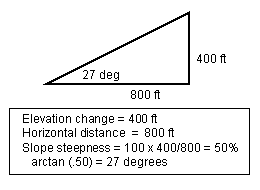

|
|
Slope Steepness |
Slope steepness is the maximum steepness of the slope. It is expressed as either percent or degrees depending on the input option that is selected. This is not necessarily the slope steepness in the direction of spread.
|
I/O |
Module |
If |
Notes |
|
Input |
SURFACE |
If Slope steepness is specified on the worksheet is selected as an input option. |
|
|
Output |
SURFACE |
If Slope steepness is calculated from map measurements is selected as an input option. |
|
|  |
When determining the slope of a hillside from map measurements, the user should select one point at the bottom of the slope and the other at the top. The line connecting these two points should be, as much as possible, perpendicular to the contour lines.